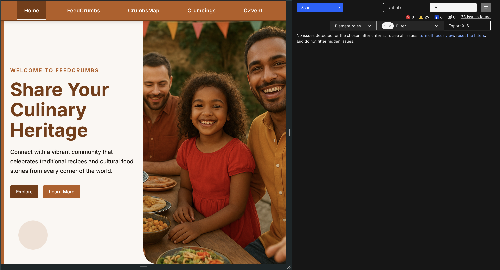
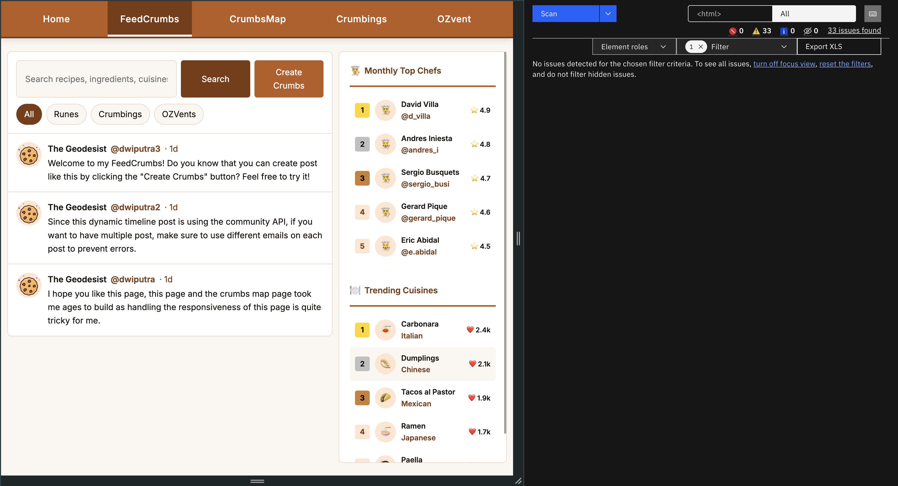
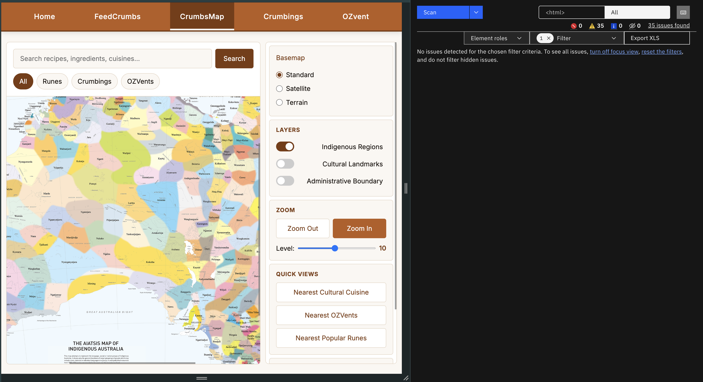
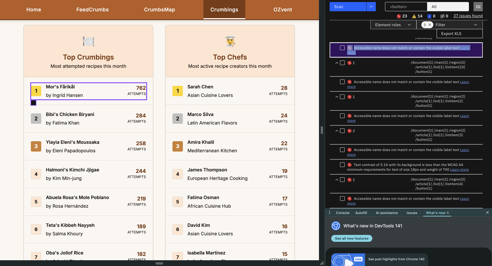
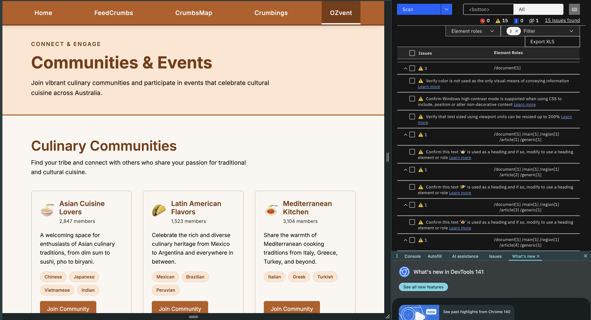
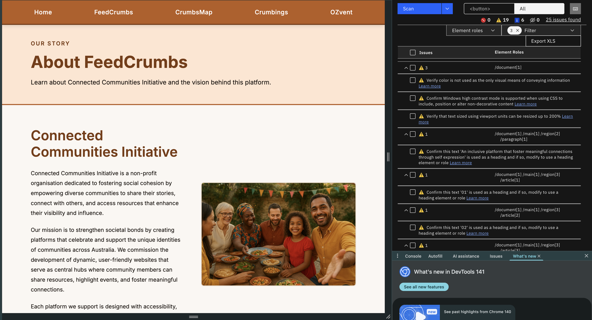
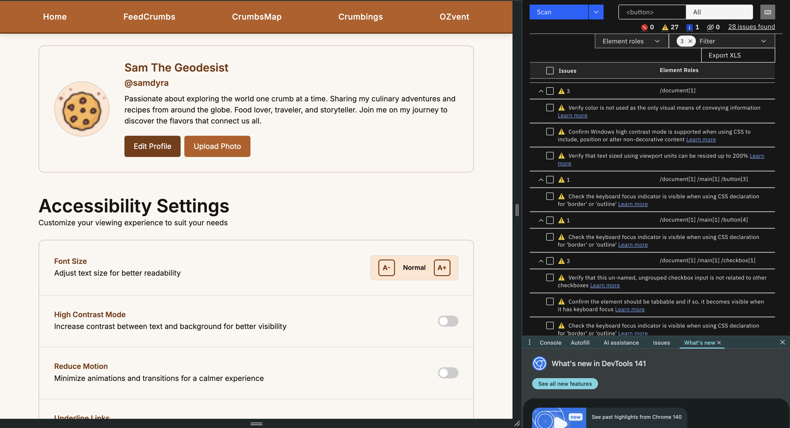

Implementation Rationale
Thanks!
First off I just want to mention that I really enjoyed working this assignment 4. It was a really it was a challanging yet fun experience to build a website end to end, from gathering the values, needs, planning the features, learning to design ethical and accessible the UX/UI, and finally implementing the website. Hats off to the teaching team for creating such an engaging and educative course!
Below is my rationale regarding the implementation rationale and justification for the design and features that I have made in this assignment.
Based on the client brief, values, and the user needs that I have identified in
A2 and A3, i want to revolve the to revolve around an inclusive platform that
foster meaningful connections through self expression. To achieve this, I have
implemented several features, accessiblity considerations, and ethical design
principles in the website.
As explained in the
Sitemap in A3
, each page in the sitemap is designed to answer all user needs and client
brief. In order to accomplish the planning, I implement all the planned main
pages in the sitemap. Overall, rhe website features such as FeedCrumbs,
Crumbings, CrumbsMap, and OZvent are
designed to facilitate sharing of culinary heritage, exploration of diverse food
cultures, and community engagement. These features align with the user needs and
client brief of promoting community connection and engagement through
traditional culinary, while the about, account, and accessibility pages are
designed to provide users with information about the platform, and customization
options to enhance their experience, which also aligns with the client brief of
ethical and inclusive design. Several other key elements to support the client
brief
and user needs are explained below.
I use an inclusive, diverse, and warm hero section to welcome
users from all backgrounds, which aligns with the client’s value of inclusivity.
To support the reflective aspect of the client’s goals, I have used ethical and
welcoming language throughout the website, encouraging users to share their
stories and experiences related to food and culture to the wider community.
Furtheremore, to make sure users feels more engaged, I have implemented
behavorial elements such as dynamic contents, interactive components, and easy
navigation to enhance user experience and encourage exploration.
Furthermore, I also leverage
the UX/UI
design principles that I have learned throughout the course to create a
user-friendly,
for example the Gestralt principles of proximity, similarity, and Law of
Prägnanz is fundamentally applied in the layout and visual hierarchy of the
website to
ensure clarity and ease of use. To also make the visceral design more appealing,
I have
used a warm color palette, professional typography, and culturally relevant
imagery to create an emotional connection with the users, and also maintain
consistency in design elements throughout the website to enhance usability and
aesthetic appeal.
Overall, my strategy to align the implementation with the client and user needs
is basically by following the planned features, accessibility considerations,
and ethical design principles that I have identified in the previous phases of
the project, alongside with the knowledge and the skills that I have learned
throughout the course.
Furtheremore, I have also make sure all the pages, modals, sidebars, and other components are fully mobile and tablet responsive, to ensure that users can access the platform from any device. This is achieved through responsive design techniques using grids, flexbox, media queries, and mobile first design approach.
To make sure that the implementation is ethically sound, I have adhered to the ACS Code of Ethics throughout the design and development process. This includes ensuring user privacy for example, I adjust the newsletter subscription form to be only ask for email, name, and preferred community, instead of more sensitive data such as annual income and spending habits. This change is made to respect user privacy and minimize potential harm, in line with the ACS principles of honesty and respect. This platform also did not use any user tracking or third-party cookies, to further protect user privacy and ensure that users feel safe and secure while using the platform.
Overall, my approach to accessibility and ethical considerations is to prioritize user needs and rights, while also aligning with the client’s values and goals for the platform.
Lastly, due to several technical such as API limitation and time constraint, I did not finished all the features as originally planned in A3. For example, I did not fully implement the post detail and community notes functionalities in the FeedCrumbs page, and I also did not fully implement some of the functionalities in the crumbings page, crumbs map, and Account page. But rest assured, those features are still partially implemented and functional to some extent, and I have made sure that the core features and functionalities grand picture of the planned features is still shown by the current implementation.
In addition with the planned features in A3, I have also added several additional features and enhancements, such as about page, modal and sidebar components, and several accessibility features customization in the account page.
But overall, the core features and functionalities that I proposed in A3 have been implemented as planned, such as the pages, features, and accessibility considerations, with only minor adjustments made to enhance usability, accessibility, and overall user experience.
Another challange that I faced is the code structure and organization, especially when the codebase started to grow larger and a bit more complex, especially the css part. There are several times where I have an annoying bug because I have conflicting css rules or I accidentally override some styles that I have defined before. To overcome this challenge, I have adopted a more systematic approach to code organization, by creating small chunks of css components for each components, and also using more specific class names to avoid conflicts, as also reccommended in the studio activities.
      
Overall, the accessibility audit results show that the website has been designed with accessibility in mind, with no critical issues found across all pages. There are minor issues in the Crumbings page in the items, as I have mentioned before, but other than that, all other pages have no critical issues.